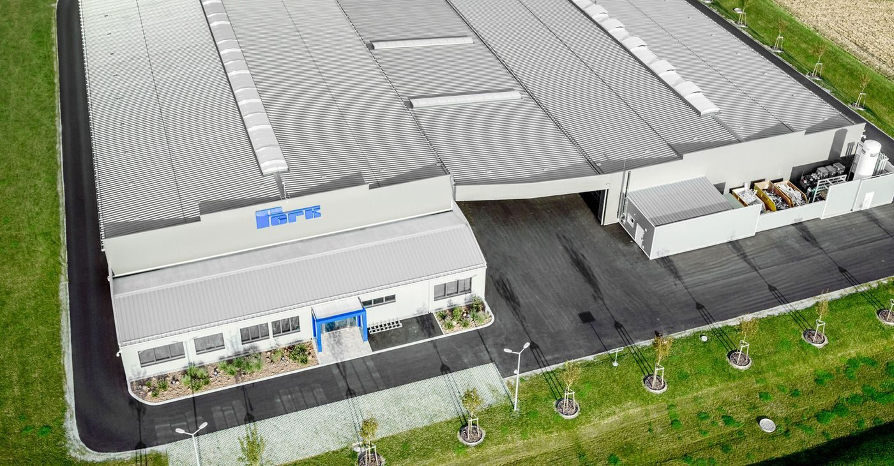
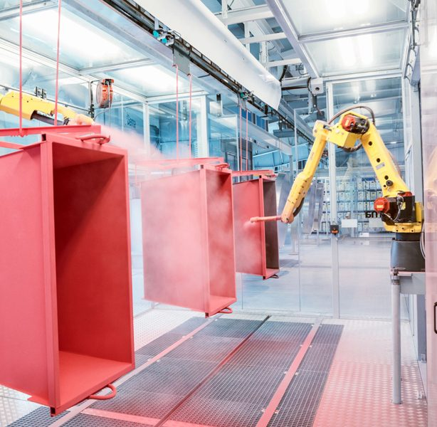

Lasertechnik
Vollautomatisch gesteuerte CO2-Laserschneideanlage und Rohrlaser – Schnittgenauigkeit ± 0,1 mm.
Zur LasertechnikNur die Fantasie ist die Grenze
Metallbearbeitung in höchster Qualität – seit vier Generationen. Von der Laserschneideanlage über CNC-gesteuerte Abkantpressen und ÖNORM-geprüftes Schweißen bis zur robotergesteuerten Pulverbeschichtung und Eloxal: die gesamte Wertschöpfung unter einem Dach in der Süd-Ost-Steiermark.
Tradition und Innovation
Im Laufe von vier Generationen hat sich Ferk von einem kleinen Metallbauer zu einem Gewerbebetrieb beachtlicher Größenordnung entwickelt. Äußerer Ausdruck dieses soliden und konstanten Wachstums sind die im Jahr 2016 in Betrieb genommenen Produktionshallen mit modernster technischer Ausstattung.
Trotz dieses Wachstums ist im Unternehmen eines spürbar: die Begeisterung aller Mitarbeiter für das Material Metall. Gepaart mit dem enormen technischen Know-how liegt genau darin die Kraft des dynamischen Unternehmens, das 2015 in seiner Kategorie als „Austrian Leading Company“ ausgezeichnet wurde.

Fertigung
Von der Laserschneideanlage über CNC-gesteuerte Abkantpressen bis zur leistungsstarken Profilbiegemaschine und ÖNORM-geprüften Mitarbeitern im Bereich Schweißen: Die Fertigung von Metallbauteilen ist eine unserer Kernstärken. Ohne motivierte und bestausgebildete Mitarbeiter ist auch die modernste Technik nur halb so viel wert.
Vollautomatisch gesteuerte CO2-Laserschneideanlage und Rohrlaser – Schnittgenauigkeit ± 0,1 mm.
Zur LasertechnikCNC-gesteuerte Abkantpressen mit 300 bis 1500 kN Presskraft und gesteuerten Hinteranschlägen.
Zum KantenGeprüfte Schweißer nach EN ISO 9606-2 und ÖNORM EN 287-1:2004, Schweißroboter, Bolzen- und Punktschweißen.
Zum SchweißenStahl- und Aluminiumprofile bis max. 80 mm Querschnitt, auch unsymmetrische Profile.
Zum ProfilbiegenIndividuelle Formen und Konstruktionen aus Acrylglas – präzise Schnitte und Biegearbeiten.
Zum AcrylglasEdelstahlbau, Stahlbau und Blechtechnik – die Säulen unseres Fertigungsbereiches.
Zu den Produkten
Oberflächentechnik
Zahlreiche renommierte Unternehmen setzen auf die Erfahrung und Qualität von Ferk Metallbau im Bereich Oberflächentechnik. Mit der neuen Produktionshalle wurde auch eine in Österreich einzigartige robotergesteuerte Pulverbeschichtungsanlage in Betrieb genommen – sie ermöglicht auch das Beschichten von 3D-Teilen.
Neu bei Ferk: Eine moderne Eloxalanlage vervollständigt den Bereich Oberflächentechnik. Unsere erfahrenen Mitarbeiter beraten Sie gerne über das für Ihr Projekt am besten geeignete Oberflächenverfahren.
Die Kombination der Materialien Stahl und Acryl ermöglicht die Realisierung außergewöhnlicher Ideen. Wir kooperieren im Bereich Inneneinrichtung seit Jahren mit Architekten, Innenausstattern und Tischlereien.
Das modular konzipierte Gastgartensystem gastrodeck bietet der urbanen Gastronomie maximale Flexibilität hinsichtlich Terrassengröße, Auf- und Abbau sowie Lagerung. Hochwertige Materialien – Edelstahl und Nomawood-Boden – garantieren die Langlebigkeit des Systems.

Zertifikate
Im Zuge unserer zweijährlichen Qualifizierungsmaßnahmen des Schweißpersonals weist unser Unternehmen derzeit 20 Schweißer-Prüfungsbescheinigungen auf.
Anfrage
Einzelteil, Serie oder Sonderformat: Beschreiben Sie Material, Stückzahl und gewünschte Oberfläche – unsere Arbeitsvorbereitung meldet sich mit einer belastbaren Einschätzung zurück.